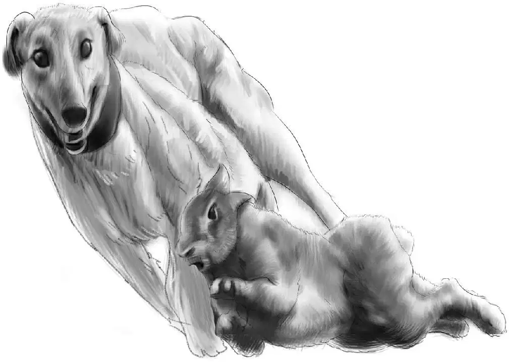
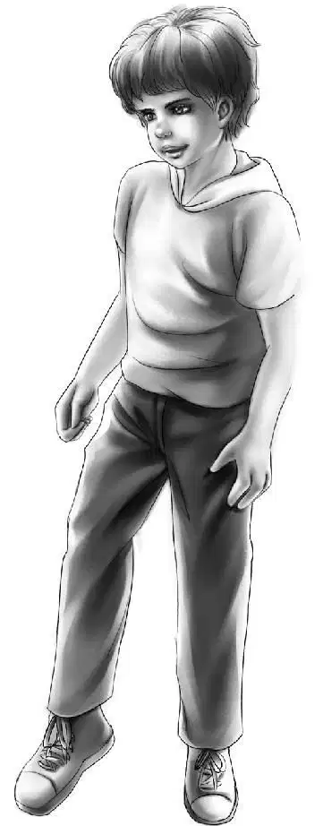
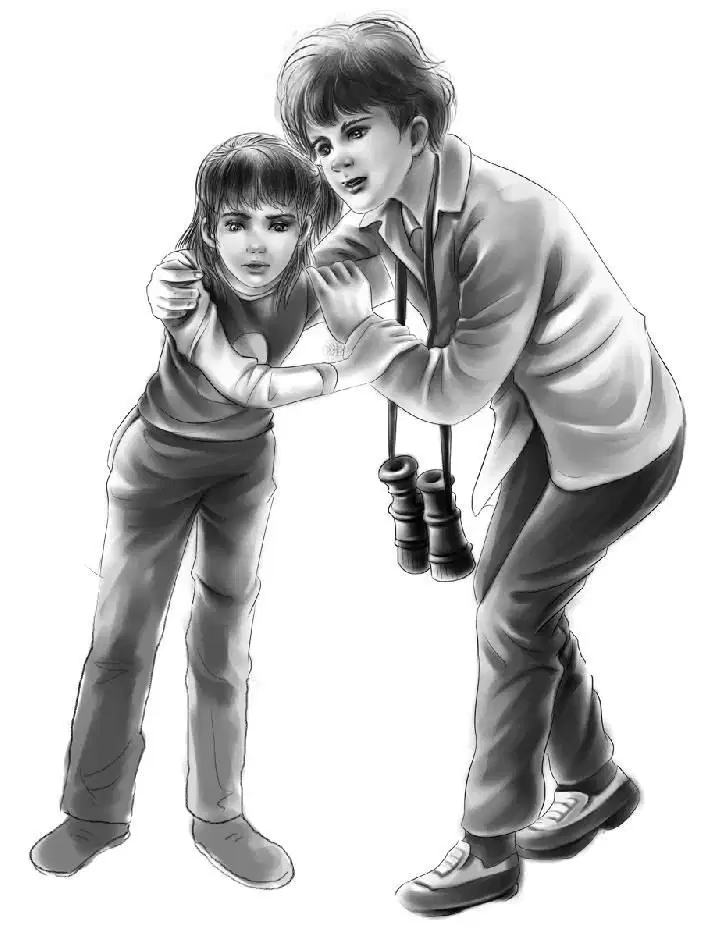
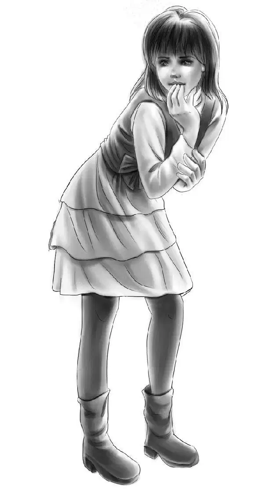
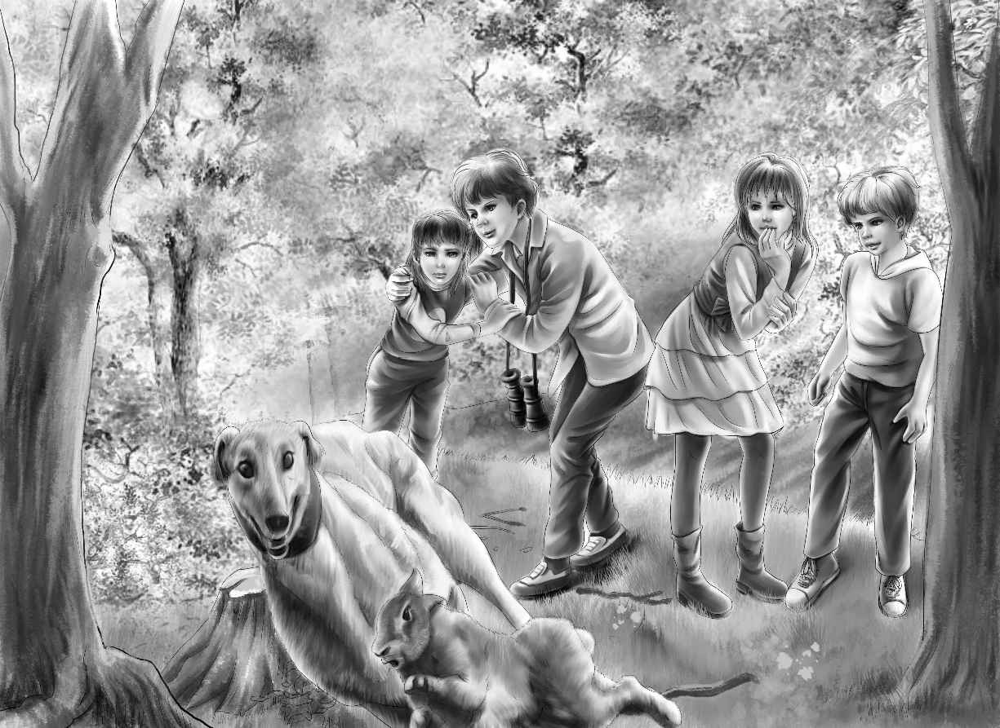
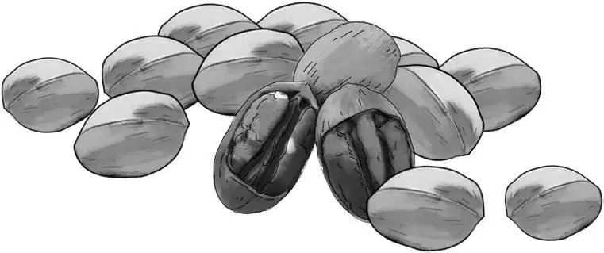

Cabin in the Woods

一家人还没看到小屋，望望便远远地叫了起来，它的叫声有些不同寻常，于是大家一齐朝前方望去，果然有一座小木屋伫立在那里。大家加紧脚步走了过去，发现门是锁着的，好在亨利手里有钥匙。
望望第一个进了屋，它用鼻子抵着地板，四处嗅闻。孩子们紧跟着走了进去，发现屋子一侧摆着一张糙面桌子，六把简易椅子，而桌旁的窗下是一张长长的窗椅，铺着棕黄色的硬垫。
班尼看了看窗椅，说：“这倒让我想起以前还没找到棚车时，咱们在面包店过夜的那一晚。今晚我就睡在长椅上好了，一定有趣得很。”
“依我看，睡一晚就行，班尼。”亨利说，“这些垫子看起来好硬啊！”
“我还是更喜欢沙发。”杰西说着，戳了戳亮绿色的沙发，“旧是旧了些，可是很软呢！我猜它是给客人准备的，打开就是一张双人床。”
“恐怕是派不上用场了，”亨利说，“又不会有客人上门。”
“那咱们可以坐啊！”班尼说，“你们瞧望望，它趴得多舒服！”
杰西看了看望望，笑了起来，望望已经四仰八叉地躺在了沙发上。
“你一定在想，我会把你赶下去吧，望望？”杰西说，“不过这次，你可以继续待在上面，反正这沙发已经旧了，不会被你弄坏的。”
屋子的另一侧放着一座煤油炉，旁边是个有水龙头的水槽。
“是凉水。”班尼用手试了试说。
“那是自然，班尼。”亨利说，“你还指望有热水吗？这可是山泉！”
水槽旁边是两个橱架，架子上有个抽屉，墙边整齐地摞着一堆木柴。
“噢，这儿还有壁炉呢，太棒了。”维莉说，“难怪会备着木柴。”
壁炉正上方的架子上摆放着两个烛台，里面插着两根蜡烛。壁炉旁边则放着一把长柄铁锹和一把斧子。
前门的左侧是两个小卧室，杰西掀开一个卧室的门帘，看到了两张床，另一间屋子里也是同样的摆设。
孩子们没再说什么，只是各自把睡袋放在四张床上，随后放下背包，回到了客厅。只见客厅的桌子上放着一本厚厚的、黑色封皮的书。

“噢！”亨利叫了起来，“这肯定是《游客签名簿》。还记得爷爷提醒过咱们吗？一定要把自己的名字和使用日期写在上面，看，这一页有空白。”
亨利拿出钢笔，写下了自己的名字、住址和使用日期，接着把笔递给了杰西，就这样，每个人都在空白页上留下了自己的签名。
签完后，维莉将签名簿翻到第一页，只见上面写着一行又一行的名字。
“这是那个店主的名字——托马斯·尼尔森！”班尼叫了起来，“他来这里干什么？”
“兴许是来打猎的。”亨利答道。
“他不就住在树林里么，有必要到小木屋这里来打猎吗？”
“的确很奇怪，班尼，”亨利说，“他居然还带了家人一起来，我看，这个芭芭拉·尼尔森一定是他的妻子，而那个叫帕奇的，肯定是个小男孩。”
“也许是个小女孩呢？”杰西说道。
“我看不会是女孩。”亨利说，“不会有人给女孩起这个名字——就是小名也不会。不过重点是，为什么托马斯把家人也带上来了？”
“哎呀，咱们还是坐到窗椅上，仔细读一读这本签名簿吧！”杰西说着，脱掉了厚厚的外套，“看看还能找到谁的名字，反正有的是时间。”
孩子们各自脱了外套，在窗椅上一溜排坐了下来，亨利边翻页，边念名字。
“这儿写着罗伯特·鲁宾斯先生的名字——他也是爷爷的朋友。”亨利说着，又翻了一页。
“哦，看哪，这里又是尼尔森一家！”班尼叫道。
“他们为什么来了两次？”维莉问道，“肯定不是来打猎的。”
“啊，”班尼故作幽默地说道，“这是个神秘事件！杰西说过，咱们总能碰到神秘事件的。”
“我可没这样说过，班尼。”杰西笑道，“我说的不是神秘事件，是探险。”
“可还是被你说中了，不是么？”班尼说道，“这难道不是探险么？”
“我觉得这是一个神秘事件。”亨利说，“看！”他指了指更早的签名，在那一页上，已经第三次出现了尼尔森一家的名字。
“大家都听我说，”杰西提议道，“咱们虽说用不着买日用品，不过还是可以去尼尔森商店看看，你们说呢？”
“好主意。”维莉和亨利齐声赞同。
“我也同意，”班尼说，“不过，是不是先吃午饭更好？”
亨利合上书，站起身来，说：“我就说嘛，班尼，你总是第一个喊饿。不过，这也难怪，爬上来以后，连我都饿了。咱们什么时候吃午饭？”
说话间，杰西和维莉已经去了厨房，厨房就在屋子的另一端。
“就随便吃点三明治吧，费不了多少时间。”班尼说，“晚上再做热乎的饭菜——就在壁炉里生火做饭。”
“这个主意不错。”维莉说，“我想吃金枪鱼三明治，但愿咱们带了开罐器。”
“带着呢。”杰西说，“就算是没带，班尼还有把小折刀。”
班尼的小折刀有好多功能：有螺丝刀，还有一把小剪子。
维莉在橱柜里翻找了一会儿，寻到一块红白相间的塑料桌布，便把它铺到桌上。随后，她跑出去，找了些红色和黄色的叶子回来，放在一个白色的小碗里，摆在桌子中间。
“杰西，我能吃下十个三明治！”班尼叫道。
“知道啦！你先吃两个，不够的话，我再多做几个。不过，那就要多开几罐三文鱼罐头。”
班尼吃了两个三明治，喝了几杯牛奶，直到再也撑不下去。香蕉则被大家当成了饭后甜点。
趁大家吃饭的工夫，杰西建议道：“出门之前，咱们先把行李拿出来，看看有没有什么要带的。”

“把小望远镜带上。”班尼说道，“或许会看到小鸟呢。”
“嘘——看啊！”维莉说着，目光投向了屋外的树上。
只见树干上落着一只啄木鸟，还有一只山雀和一只金翅雀在枝叶间飞舞。
“真好，还没出门就看到小鸟了。”杰西说道，“咱们可以给小鸟做个食盆，再买些生瓜子喂它们。”
“到了商店就知道帕奇到底是男孩还是女孩了。”
“你知道商店在哪儿么，班尼？”维莉问道。
“不知道，不过我想我找得到，反正只有一条小路。”
“爷爷说过，咱们肯定会看见那间商店的。”维莉说。
“关门出发咯！”班尼叫了一声，与望望追逐着跑了出去。
孩子们走在小路上，不错眼儿地打量着沿途的新鲜事物。突然，一只野兔从前方的远处蹿了出来，亮出它那白绒绒的短尾巴。
“看哪！”维莉说，“小兔子肯定被吓坏了，它也许从来都没见过人呢。”
就在这时，望望闻到了兔子的味道，立刻冲上前去，但速度太快，差点摔了个筋斗。
“望望！”亨利叫道，“回来！”
可是望望根本不理会亨利和别人的叫喊。
除了杰西以外。
“望望，马上给我站住！”杰西叫道。
可怜的望望收势不住，身子擦着地面划了出去——不论杰西说什么，它总是言听计从。望望抬头望着杰西，眼里充满了失望。
“对不起，望望，我知道，你肯定很失望。”杰西说着，拍了拍它的脑袋，“可我决不会允许你咬死那只小兔子的，明白么？”
望望尽管有些沮丧，但似乎听明白了杰西的话，一溜烟儿地重新跟在孩子们身后欢跑了。

维莉沿路发现了一些蜿蜒的藤蔓，还有红色的莓子。“等回来的时候再去摘吧！这样小屋里就有漂亮的装饰品了。”她说。

亨利却没有留意脚下的路，他的目光落在了头顶的树上——确切地说，他还专门停下来一阵子，抬头看了看。

“你在找什么呢？”班尼问道。
“什么也没找。”亨利答道，“不过我倒是看到了几棵山核桃树，也许还可以摘到山核桃呢——刚才我看到了几个。”
“哇噢，”杰西叫道，“山核桃好吃得很，咱们可以捡一些回去，在木屋里砸开吃。”
“捡核桃是挺好玩。”维莉说，“不过，这事得改天再说，咱们必须先找到尼尔森商店哪！”
“没错，说得对。”杰西答道。
“还得在天黑前赶回小屋。”亨利说，“别忘了，咱们对这一带并不熟悉。”